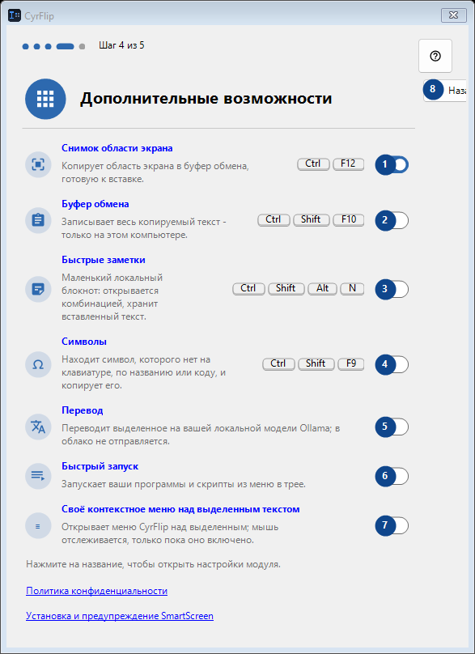
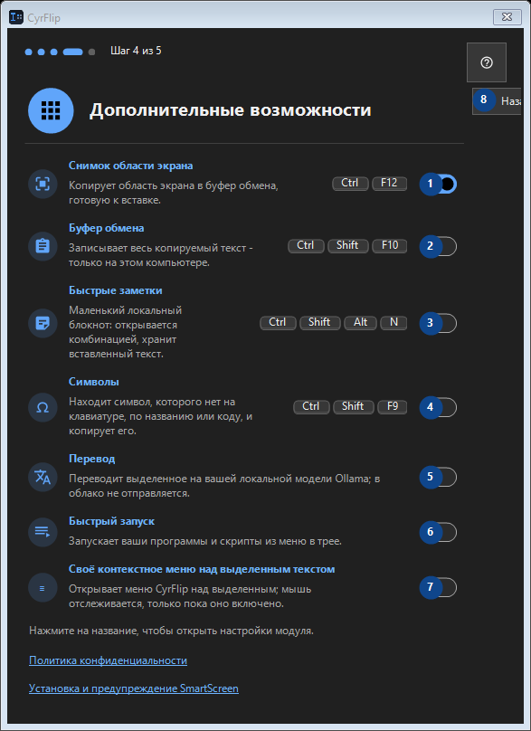

Дополнительные возможности
Для чего это окно
Прочитайте пояснения к номерам, выберите нужные значения и продолжите командой окна.


Порядок действий
Прочитайте пояснения к номерам, выберите нужные значения и продолжите командой окна.
Элементы
1. Снимок области экрана
Включено
Ваши сочетания клавиш2. Буфер обмена
Выключено
Ваши сочетания клавиш3. Быстрые заметки
Выключено
Ваши сочетания клавиш4. Символы
Выключено
Ваши сочетания клавиш5. Перевод
Выключено
Ваши сочетания клавиш6. Быстрый запуск
Выключено
Ваши сочетания клавиш7. Своё контекстное меню над выделенным текстом
Выключено
Ваши сочетания клавиш8. Назад
Используйте команду, когда нужно указанное действие. Прочитайте запрос подтверждения перед согласием.
Ваши сочетания клавиш9. Далее
Используйте команду, когда нужно указанное действие. Прочитайте запрос подтверждения перед согласием.
Ваши сочетания клавиш10. Пропустить
Используйте команду, когда нужно указанное действие. Прочитайте запрос подтверждения перед согласием.
Ваши сочетания клавиш